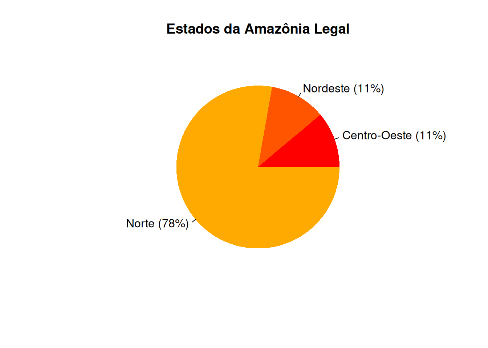

# Instalando o pacote 'leem' (via CRAN)
# install.packages("leem")
# (ou) Instalando via github
pkgs <- c("manipulate", "tkRplotR",
"tkrplot", "crayon")
install.packages(pkgs)
# Instalando o pacote 'devtools'
install.packages("devtools")
# Instalando o pacote 'leem'
devtools::install_github("bendeivide/leem")2 Coleta, organização e apresentação dos dados
2.1 Introdução
Após selecionado a população de interesse, definindo os elementos que a compõe, bem como as variáveis que serão estudadas, fazemos o processo de coleta dos dados. Os dados são os valores assumidos de uma variável em um determinado elemento da população, que pode está sendo estudado por meio de uma amostra ou coletado diretamente da população. Neste último caso, a pesquisa realizada é um Censo.
Ao termos um primeiro contato com os dados, percebemos que algumas informações prévias podem não ser facilmente obtidas, devido a desorganização dessas observações, Isso ocorre principalmente quando temos um grande número de dados.
Definição 2.1: Dados brutos
Os dados coletados numa forma sem ordenação e sem nenhum tipo de arranjo sistemático são chamados dados brutos.
Os dados da Tabela 2.1, retirado de Montgomery e Runger (2016, p. 188), representam o número de erros em um conjunto de caracteres (strings) de 1.000 bits, que foram monitorados por um canal de comunicação. No total, foram coletados dados de 20 conjuntos de caracteres.
| 3 | 1 | 0 | 1 | 3 | 2 | 4 | 1 | 3 | 1 |
| 1 | 1 | 2 | 3 | 3 | 2 | 0 | 2 | 0 | 1 |
Podemos observar pela Tabela 2.1 que estes representam um tipo de dados brutos, pois não há qualquer ordenamento sobre os seus valores, e que a interpretação desses dados poderá se complicar à medida que o tamanho da amostra aumenta. Quando ordenamos os dados brutos podemos obter algumas informações mais facilmente, como por exemplo, valores mínimos e máximos desses conjunto de dados.
Definição 2.2: Dados em rol ou elaborados
Os dados brutos, Definição 2.1, ordenados de modo crescente ou decrescente alfanumericamente, são chamados de dados em rol ou elaborados.
Agora, podemos transformar os dados brutos da Tabela 2.1, em dados elaborados (em Rol), apresentados na Tabela 2.2. Em termos de notação, iremos representar um conjunto de variáveis ordenadas dessa forma, \(X_1\), \(X_2\), \(\ldots\), \(X_n\), de tamanho \(n\). Com o ordenamento, usaremos um parêntese no índice, \(X_{(1)}\), \(X_{(2)}\), \(\ldots\), \(X_{(n)}\), de modo que, \(X_{(1)} = \min_i(X_i)\) e \(X_{(n)} = \max_i(X_i)\) para \(i\) \(=\) \(1\), \(2\), \(\ldots\), \(n\). Da mesma forma, vale para a representação dos valores observados dessas respectivas variáveis, isto é, valores observados sem ordenação denotados por \(x_{(1)}\), \(x_{(2)}\), \(\ldots\), \(x_{(n)}\), e valores observados ordenados \(x_{(1)} = \min_i(x_i)\) e \(x_{(n)} = \max_i(x_i)\). Este último é a representação, em notação, dos dados elaborados.
| 0 | 0 | 0 | 1 | 1 | 1 | 1 | 1 | 1 | 1 |
| 2 | 2 | 2 | 2 | 3 | 3 | 3 | 3 | 3 | 4 |
Percebemos, com os dados elaborados, que os valores extremos representam, respectivamente, os valores mínimo e máximo do conjunto de dados, independente do número de elementos. Isso facilita a percepção de algumas informações, porém ainda limitado, uma vez que a quantidade de valores pode ser simplicada, sem perda de informações, por meio de tabulações agrupadas em distribuição de frequências. Além de simplificar, podemos obter mais informações do que se estes dados tivessem expressos sem tabulação, do qual, trataremos na próxima seção.
2.2 Representação tabular
A frequência simples ou frequência absoluta, representa o número de vezes que determinado valor foi observado, que em notação, denotaremos por \(F_i\) i-ésima frequência de determinada variável, em que a frequência observada será denotada por \(f_i\). Vejamos o agrupamento dos dados da Tabela 2.2, em distribuição de frequência, a seguir.
| Número de erros \(\mathbf{(x_i)}\) | Frequência simples \(\mathbf{(f_i)}\) |
|---|---|
| 0 | 3 |
| 1 | 7 |
| 2 | 4 |
| 3 | 5 |
| 4 | 1 |
| Total | 20 |
De forma mais fácil, podemos por meio da Tabela 2.3 saber quantas vezes um determinado valor foi observado, sem grandes esforços, bastando apenas olhar para a coluna de frequências absolutas. Se desejarmos, apresentar uma forma relativa dessa frequência em relação ao número total de observações, podemos utilizar a frequência relativa, denotada por \(F_r\), em que \(f_r\) representa o seu respectivo valor observado, e que essa frequência será um valor entre \(0\) e \(1\). Calculamos a frequência relativa, de acordo com a expressão (2.1), \[ \begin{align} F_{r_i} & = \frac{F_i}{\sum_{i = 1}^{k}F_i}, \quad i = 1, 2, \ldots, k, \end{align} \tag{2.1}\] sendo \(k\) o número de grupos ou classes. No caso, o cálculo da frequência relativa baseado na Tabela 2.3, a representação de \(k\) se refere ao número de grupos, uma vez que os dados são discretizados. Portanto, esse tipo de agrupamento é válido tanto para as variáveis qualitativas quanto para a variável quantitativa discreta. No caso da variável quantitativa contínua, agrupamos os seus valores em classes, uma vez que sua natureza não é discretizada. O modo de como criar essas classes, aprenderemos mais a frente. Desse modo, a Tabela 2.4 apresenta o agrupamento dos dados do número de erros encontrados em 20 conjunto de caracteres monitorado em um canal de comunicação, juntamente com a frequência relativa de seus valores.
| Número de erros \(\mathbf{(x_i)}\) | Frequência simples \(\mathbf{(f_i)}\) | Frequência relativa \(\mathbf{(f_{r_i})}\) |
|---|---|---|
| \(0\) | \(3\) | \(3 / 20 = 0,15\) |
| \(1\) | \(7\) | \(7 / 20 = 0,35\) |
| \(2\) | \(4\) | \(4 / 20 = 0,20\) |
| \(3\) | \(5\) | \(5 / 20 = 0,25\) |
| \(4\) | \(1\) | \(1 / 20 = 0,05\) |
| Total | \(20\) | \(1\) |
Percebemos que \(\sum_{i = 1}^{k}f_i = n\), uma vez que os dados são amostrais. A frequência relativa passa a ter sentido prático quando usamos o resultado em porcentagem, surgindo então, a frequência percentual, denotada por \(F_\%\), cujo valor observado é dado por \(f_\%\), de modo que essa frequência é calculada pela expressão (2.2).
\[ \begin{align} F_{\%_i} & = F_{r_i} \times 100, \quad i = 1, 2, \ldots, k, \end{align} \tag{2.2}\] em que \(F_{r_i}\) é dado pela expressão (2.1), e \(k\) é igual ao número de grupos ou classes.
Assim, podemos acrescentar a frequência percentual aos dados da Tabela 2.4, que pode ser apresentado na Tabela 2.5.
| Número de erros \(\mathbf{(x_i)}\) | Frequência simples \(\mathbf{(f_i)}\) | Frequência relativa \(\mathbf{(f_{r_i})}\) | Freq. percentual \(\mathbf{(f_{\%_i})}\) |
|---|---|---|---|
| \(0\) | \(3\) | \(0,15\) | \(0,15 \times 100 = 15\%\) |
| \(1\) | \(7\) | \(0,35\) | \(0,35 \times 100 = 35\%\) |
| \(2\) | \(4\) | \(0,20\) | \(0,20 \times 100 = 20\%\) |
| \(3\) | \(5\) | \(0,25\) | \(0,25 \times 100 = 25\%\) |
| \(4\) | \(1\) | \(0,05\) | \(0,05 \times 100 = 5\%\) |
| Total | \(20\) | \(1\) | \(100\%\) |
Podemos observar que, \(35\%\) do grupo de caracteres apresentava apenas \(1\) erro, \(15\%\) dos grupos não apresentaram erros. Porém, se perguntássemos, no mínimo, quantos grupos apresentaram \(2\) erros? Em quantos grupos tivemos, no máximo, \(3\) erros? A primeira pergunta, seria respondida somando as frequências simples (ou absolutas) \(4\) \(+\) \(5\) \(+\) \(1\) \(=\) \(10\) grupos. Para a segunda pergunta, responderíamos \(3\) \(+\) \(7\) \(+\) \(4\) \(+\) \(5\) \(+\) \(1\) \(=\) \(19\) grupos. Isso poderia tornar mais oneroso, à medida que o nome de grupos fosse aumentando. Ao invés, usaremos as frequências acumuladas, para auxiliar indagações desse tipo aos dados.
Temos dois tipos de frequências acumuladas, a frequência acumulada abaixo de, denotada por \(F_{ac\downarrow}\), cujo valor calculado é denotado por \(f_{ac\downarrow}\), dado pela expressão (2.3),
\[ \begin{align} F_{ac\downarrow_i} & = \sum_{j = 1}^{i}F_j, \quad i = 1, 2, \ldots, k, \end{align} \tag{2.3}\] sendo \(k\) o número de grupos ou classes, e \(F_j\) representando \(j\)-ésima frequência absoluta.
A outra é a frequência acumulada acima de, denotada por \(F_{ac\uparrow}\), cujo valor calculado é denotado por \(f_{ac\uparrow}\), dado pela expressão (2.4), \[ \begin{align} F_{ac\uparrow_i} & = \sum_{j = i}^{k}F_j, \quad i = 1, 2, \ldots, k, \end{align} \tag{2.4}\] sendo \(k\) o número de grupos ou classes, e \(F_j\) representando \(j\)-ésima frequência absoluta. Na Tabela 2.6, complementamos as informações com as frequências acumuladas os dados apresentados da Tabela 2.5.
| \(\mathbf{x_i}\) | \(\mathbf{f_i}\) | \(\mathbf{f_{r_i}}\) | \(\mathbf{f_{\%_i}}\) | Freq. acum. \(\mathbf{(f_{ac\downarrow_i})}\) | Freq. acum. \(\mathbf{(f_{ac\uparrow_i})}\) |
|---|---|---|---|---|---|
| \(0\) | \(3\) | \(0,15\) | \(15\%\) | \(3\) | \(3 + 7 + 4 + 5 + 1 = 20\) |
| \(1\) | \(7\) | \(0,35\) | \(35\%\) | \(3 + 7 = 10\) | \(7 + 4 + 5 + 1 = 20 - 3 = 17\) |
| \(2\) | \(4\) | \(0,20\) | \(20\%\) | \(3 + 7 + 4 = 14\) | \(4 + 5 + 1 = 17 - 7 = 10\) |
| \(3\) | \(5\) | \(0,25\) | \(25\%\) | \(3 + 7 + 4 + 5 = 19\) | \(5 + 1 = 10 - 4 = 6\) |
| \(4\) | \(1\) | \(0,05\) | \(5\%\) | \(3 + 7 + 4 + 5 + 1 = 20\) | \(1 = 6 - 5 = 1\) |
| Total | \(20\) | \(1\) | \(100\) | - | - |
É importante notar que sempre o último valor da coluna da frequência acumulada abaixo de é o número total de elementos, e que o último valor da frequência acumulada acima de coincide com o seu respectivo valor da frequência simples (\(f_i\)), como pode ser observado na Tabela 2.6. Uma outra coisa interessante, é que podemos ter uma forma alternativa de calcular a frequência acumulada acima de, dado pela expressão (2.5),
\[ \begin{align} F_{ac\uparrow_i} & = \left\{\begin{array}{ll} \sum_{i = 1}^{k}F_i, & i = 1, \\ F_{ac_{\uparrow_{i - 1}}} - F_{i-1}, & \textrm{demais casos,} \end{array}\right. \end{align} \tag{2.5}\] sendo \(k\) o número de grupos ou classes. Vamos tentar entender as equivalências entre as expressões (2.4) e (2.5). Indagamos, quantos grupos apresentam, no mínimo, \(1\) erro? Observe que \(x_2 = 1\), isto é, os valores observados iguais a \(1\), estão no segundo grupo. Assim, pela expressão ([-Equação 2.4}, temos que a frequência acumulada (abaixo de) observada para o segundo grupo é
\[\begin{align*} f_{ac\uparrow_2} & = \sum_{j = 2}^{5}f_j = 7 + 4 + 5 + 1 = 17. \end{align*}\] Da mesma forma, podemos utilizar a expressão (2.5), e de modo equivalente, temos \[\begin{align*} f_{ac\uparrow_2} & = f_{ac_{\uparrow_{2 - 1}}} - f_{2 - 1}\\ & = f_{ac_{\uparrow_{1}}} - f_1\\ & = 20 - 3 = 17. \end{align*}\]
A expressão (2.5) pode parecer no primeiro momento mais trabalhoso o cálculo. Porém, perceberemos com a prática de exercícios que esse processo é mais rápido do que calcular usando a expressão (2.4).
Por fim, podemos apresentar a forma relativa e percentual das fre-quências acumuladas, usando de modo similar, quando calculamos as frequências relativas e percentuais, dadas nas expressões (2.1) e (2.2), respectivamente. Denotaremos a frequência relativa acumulada “abaixo de”, por \(Fr_{ac\downarrow_{i}}\), e a frequência relativa acumulada “acima de”, por \(Fr_{ac\uparrow_{i}}\), para o \(i\)-ésimo grupo ou classe. As expressões dessas duas frequências são dadas, respectivamente, por \[ \begin{align} Fr_{ac\downarrow_{i}} & = \frac{F_{ac\downarrow_i}}{\sum_{i = 1}^{k}F_i} \quad i = 1, 2, \ldots, k, \end{align} \tag{2.6}\] e \[ \begin{align} Fr_{ac\uparrow_{i}} & = \frac{F_{ac\uparrow_i}}{\sum_{i = 1}^{k}F_i} \quad i = 1, 2, \ldots, k, \end{align} \tag{2.7}\] em que \(F_{ac\downarrow_i}\) expresso em (2.3), \(F_{ac\uparrow_i}\) expresso em (2.4), e \(k\) é igual ao número de grupos ou classes. Já para as frequências percentuais acumuladas abaixo de e acima de, denotando-as por \(F_{ac\downarrow_i\%}\) e \(F_{ac\uparrow_i\%}\), respectivamente, e sendo expressas por \[ \begin{align} F_{ac\downarrow_{i}\%} & = Fr_{ac\downarrow_{i}} \times 100 \quad i = 1, 2, \ldots, k, \end{align} \tag{2.8}\] e \[ \begin{align} F_{ac\uparrow_{i}\%} & = Fr_{ac\uparrow_{i}} \times 100 \quad i = 1, 2, \ldots, k, \end{align} \tag{2.9}\] respectivamente, em que \(k\) é o número de grupos ou classes.
Voltando ao conjunto de dados iniciado na Tabela 2.1, podemos finalizar a sua tabulação com todas as frequências mencionadas anterioremente, em um quadro resumo na Tabela 2.7.
| Nº de erros \(\mathbf{(x_i)}\) | \(\mathbf{f_i}\) | \(\mathbf{f_{r_i}}\) | \(\mathbf{f_{\%_i}}\) | \(\mathbf{f_{ac\downarrow_i}}\) | \(\mathbf{f_{ac\uparrow_i}}\) | \(\mathbf{fr_{ac_{\downarrow}}}\) | \(\mathbf{fr_{ac_{\uparrow}}}\) | \(\mathbf{f_{ac_{\downarrow}\%}}\) | \(\mathbf{f_{ac_{\uparrow}\%}}\) |
|---|---|---|---|---|---|---|---|---|---|
| \(0\) | \(3\) | \(0,15\) | \(15\) | \(3\) | \(20\) | \(0,15\) | \(1\) | \(15\) | \(100\) |
| \(1\) | \(7\) | \(0,35\) | \(35\) | \(10\) | \(17\) | \(0,50\) | \(0,85\) | \(50\) | \(85\) |
| \(2\) | \(4\) | \(0,20\) | \(35\) | \(14\) | \(10\) | \(0,70\) | \(0,50\) | \(70\) | \(50\) |
| \(3\) | \(5\) | \(0,25\) | \(25\) | \(19\) | \(6\) | \(0,95\) | \(0,20\) | \(95\) | \(20\) |
| \(4\) | \(1\) | \(0,05\) | \(5\) | \(20\) | \(1\) | \(1\) | \(0,05\) | \(100\) | \(5\) |
| Total | \(20\) | \(1\) | \(100\) | - | - | \(1\) | \(1\) | - | - |
Essa representação tabular como falado anteriormente, pode ser usado para todas as variáveis discretizadas, como as variáveis qualitativas quanto a variável quantitativa discreta. Porém, para o caso da variável qualitativa nominal, não faz sentido o uso da frequência acumulada, uma vez que esse tipo de variável não tem ordenamento no sentido quantitativo.
Por meio do pacote leem, podemos tabular esses dados. Inicialmente podemos realizar a instalação do pacote usando o Código R 2.1.
Agora, tabular os dados de acordo com a Tabela 2.7 usando o leem é apresentado no Código R 2.2.
# Anexando o pacote leem
library(leem)
# Importando o banco de dados
con <- url("https://raw.githubusercontent.com/bendeivide/book-epaec/master/dados/cap02/challenger.RData")
load(con); close(con)
# Tabulando os dados
challenger |>
new_leem(variable = 2) |>
tabfreq()
Tabela de frequência
Tipo de variável: continuous
Classes Fi PM Fr Fac1 Fac2 Fp Fac1p Fac2p
1 25.7 |--- 36.3 1 31.0 0.03 1 36 3 2.78 100.00
2 36.3 |--- 46.9 2 41.6 0.06 3 35 6 8.33 97.22
3 46.9 |--- 57.5 4 52.2 0.11 7 33 11 19.44 91.67
4 57.5 |--- 68.1 12 62.8 0.33 19 29 33 52.78 80.56
5 68.1 |--- 78.7 12 73.4 0.33 31 17 33 86.11 47.22
6 78.7 |--- 89.3 5 84.0 0.14 36 5 14 100.00 13.89
==============================================
Classes: Agrupamento de classes
Fi: Frequência absoluta
PM: Ponto médio
Fr: Frequência relativa
Fac1: Frequência acumulada (abaixo de)
Fac2: Frequência acumulada (acima de)
Fp: Frequência percentual
Fac1p: Frequência acumulada percentual (abaixo de)
Fac2p: Frequência acumulada percentual (acima de) Para o caso da variável quantitativa contínua, precisamos agrupar os valores observados em intervalos de classe, isso porque a discretização de seus valores se devem aos instrumentos de medida, e não a natureza da variável. Por exemplo, quando medimos uma altura, \(1,78m\), de fato a altura real não está limitado a segunda casa decimal. Então, a melhor forma será criar regiões (intervalos), de modo que possamos contemplar determinados valores.
Existem diversas formas de como agrupar as variáveis quantitativas contínuas, isto é, metodologias de como desenvolver a criação de classes. Contudo, iremos nos restringir a um critério empírico, que se baseia no número de elementos, seja na amostra ou população. A primeira indagação que surge é, qual o número de classes para agrupar esses dados? Denotaremos por \(k\) o número de classes, cuja expressão é dada por: \[ \begin{align} k & \approx \left\{\begin{array}{ll} \sqrt{m}, & m \leq 100; \\ 5log_{10}(m), & m > 100, \end{array}\right. \end{align} \tag{2.10}\] em que \(m\) representa o número de elementos.
Nesse caso, o cálculo de \(k\) é uma aproximação, e devemos aproximar a um número inteiro mais próximo. Pode ocorrer situações em que o número de classes resulte em um agrupamento em que tenhamos classes com frequência \(0\), isto é, com nenhum elemento dentro dessa classe. Não faz sentido criar uma classe sem elementos. Dessa forma, ao final do processo da criação de tabelas com intervalos de classes e verificado classes sem elementos, o processo deve ser reiniciado e alterado o valor de \(k\), ou um número inteiro para baixo ou para cima. Após isso, todo o processo que será apresentado na sequência, deverá seguir. Caso esse problema se repita, novamente, voltaremos a fase de determinação de \(k\) até encontrar um inteiro, do qual se obtenha agrupamento de dados com intervalo de classes, com frequência em suas classes superior a 0. Em todo esses processo, devemos evitar que o número de classes seja inferior a 3, uma vez que para \(k < 3\) não será necessário um agrupamento de dados em tabela, para uma quantidade tão pequena de valores.
Dando sequência, após a determinação do número de classes, determinaremos a amplitude total, denotada por \(A_t\), sendo definida pela expressão (2.11), \[ \begin{align} A_t & = \max_i(X_i) - \min_i(X_i), \end{align} \tag{2.11}\] para \(i \in \mathbb{N}^{+}\).
Posteriormente, deveremos determinar a amplitude da classe, denotada por \(c\) e expressa como: \[ \begin{align} c & = \left\{\begin{array}{ll} \frac{A_t}{k - 1}, & \textrm{Amostra} \\ \frac{A_t}{k}, & \textrm{População}. \end{array}\right. \end{align} \tag{2.12}\] em \(A_t\) é expresso em (2.11) e \(k\) dada pela expressão (2.10). O fato de o denominado ter o valor de \(k\) subtraído de 1, ao invés de \(k\) para o caso dos dados amostrais, é devido a uma correção realizada no cálculo do limite inferior da primeira classe, que será apresentada a seguir. Segundo Ferreira (2009, p. 13) a justificativa se deve a suposição de que uma amostra de tamanho \(n\) tem grande chance de não conter o valor mínimo da população, isto é, à medida que o tamanho da amostra aumenta, temos uma maior chance de obter elementos menores que o valor mínimo que foi encontrado para uma amostra de tamanho menor.
Por fim, apresentamos o cálculo para se obter o limite inferior da primeira, denotado por \(Li_{1a}\), sendo dado pela expressão (2.13), \[ \begin{align} Li_{1a} & = \left\{\begin{array}{ll} X_{(1)} - c / 2, & \textrm{Amostra} \\ X_{(1)}, & \textrm{População}. \end{array}\right. \end{align} \tag{2.13}\] Realizando esses quatro passos, iremos criar as classes, iniciando pelo limite inferior da primeira classe, e para essa mesma classe, o seu limite superior será denotado por \(Ls_{1a}\), cujo cálculo é dado por \(Ls_{1a} = Li_{1a} + c\). Representaremos em notação a primeia classe da seguinte forma:
| Classe |
| \(Li_{1a}\) \(|\)— \(Ls_{1a}\) |
Em termos de conjunto, diremos que \(\textrm{Classe 1} = \{x \in \mathbb{R}~:~Li_{1a} \leq x < Ls_{1a}\}\), isto é, os valores observados pertencerão a essa classe se forem iguais ou superiores a \(Li_{1a}\) e inferiores a \(Ls_{1a}\). Como o valor do limite superior não pertence a essa classe, será contabilizado para a próxima classe. Nesse caso, o limite inferior da segunda classe será dado por \(Li_{2a} = Ls_{1a}\) e seu limite superior \(Ls_{2a} = L1_{1a} + c\), em que \(c\) é a amplitude da classe. Inserindo agora a segunda classe na tabela, temos:
| Classe |
| \(Li_{1a}\) \(|\)— \(Ls_{1a}\) |
| \(Li_{2a}\) \(|\)— \(Ls_{2a}\) |
Mais uma vez, o valor do limite superior dessa classe não pertence, mas pertencerá a próxima classe. Esse processo continua, até chegar a \(k\)-ésima classe, que ao final teremos uma tabela da seguinte forma,
| Classe |
| \(Li_{1a}\) \(|\)— \(Ls_{1a}\) |
| \(Li_{2a}\) \(|\)— \(Ls_{2a}\) |
| \(\vdots\) |
| \(Li_{ka}\) \(|\)—\(|\) \(Ls_{ka}\) |
No caso da última classe, nós contemplamos os valores dos limites a essas classes, caso existam no banco de dados. Assim, a frequência absoluta é calculada verificando os valores que estão dentro da amplitude dos intervalos, e as demais frequências seguem o mesmo raciocínio falado anteriormente. Algumas notações vistas na literatura não contemplam o limite superior da última classe, e assim, essa classe pode ser também representada da forma \(Li_{ka}\) \(|\)— \(Ls_{ka}\). Um problema surge com os dados, porque ao serem agrupados nas classes nós perdemos essa informação. Vejamos a representação de uma classe com a sua frequência absoluta,
| Classe | \(\mathbf{f_i}\) |
| \(Li_{1a}\) \(|\)— \(Ls_{1a}\) | \(f_1\) |
| \(Li_{2a}\) \(|\)— \(Ls_{2a}\) | \(f_2\) |
| \(\vdots\) | |
| \(Li_{ka}\) \(|\)—\(|\) \(Ls_{ka}\) | \(f_k\) |
Observe que sabemos quantos valores existem em cada classe, mas sem a informação dos dados brutos ou elaborados, nós não sabemos quais são os valores pertencentes a cada classe. Assim, uma alternativa de valor para representar as \(f_i\), para \(i\) \(=\) \(1\), \(2\), \(\ldots\), \(k\), em cada classe é usa o ponto médio. Esse critério é chamado hipótese tabular básica. Essa hipótese sugere que assumir o ponto médio como um potencial representante dos valores de uma determinada classe, assume um menor erro do que escolher qualquer outro valor dentro desse intervalo para representar essas observações. O ponto médio, denotado por \(\tilde{X}_i\), será dado por: \[ \begin{align} \tilde{X}_i & = \frac{Li_{ia} + Ls_{ia}}{2}, \quad i = 1, 2, \ldots, k. \end{align} \tag{2.14}\] Percebemos, que ocorre uma perda de precisão nos dados quando agrupamos em intervalo de classes, uma vez que o ponto médio passa a representar esses valores em cada classe. De todo modo, se observa que essa perda de informação é pequena para o ganho que se obtém ao representar esses dados em tabulação com intervalo de classe, no sentido não só de organização, mas de entendimento das informações. Em resumo, podemos dizer que o algoritmo para criar um agrupamento de dados em intervalo de classes pode ser dados em sete passos:
- Calcular \(k\),
- Calcular \(A_t\),
- Calcular \(c\),
- Calcular \(Li_{1a}\),
- Determinar as classes,
- Calcular o ponto médio, e
- Calcular as frequências como apresentadas no início dessa seção.
Os dados do Exemplo 2.1 foram retirados de Presidential Comission (1986, p. 129–131), e apresentados a seguir.
Exemplo 2.1
Os dados representam a temperatura (ºF) do anel de vedação de cada teste de acionamento ou lançamento real do motor do foguete Challenger, isso porque, em 1986, houve nos Estados Unidos um dos maiores acidentes com ônibus espaciais, vitimando em 8 astronautas que estavam na tripulação. Foram realizados diversos estudos pela NASA para identificar as causas da falha. A primeira atenção se voltou para a temperatura do anel de vedação, que é apresentado a seguir.
| 84 | 49 | 61 | 40 | 83 | 67 | 45 | 66 | 70 | 69 | 80 | 58 |
| 68 | 60 | 67 | 72 | 73 | 70 | 57 | 63 | 70 | 78 | 52 | 67 |
| 53 | 67 | 75 | 61 | 70 | 81 | 76 | 79 | 75 | 76 | 58 | 31 |
Diante dessas informações, para melhor apresentar essas informações, vamos agrupar esses dados em uma tabela com intervalo de classes, uma vez que a temperatura do anel de vedação é uma variável quantitativa contínua. Inicialmente, vamos calcular o número de classes, \(k = \sqrt{36} = 6\) classes. Observando os valores, percebemos que \(x_{(1)} = 31^oF\) e \(x_{(36)} = 84^oF\), logo a amplitude total é \(A_t = 53^oF\). Na sequência, calculamos amplitude da classe, \(c = 53 / (6 - 1) = 10,6^oF\), por fim, o limite inferior da primeira classe, \(Li_{1a} = 31 - 10,6 / 2 = 25,7^oF\). Assim, começaremos pela primeira classe, em que já temos o limite inferior dela e seu limite superior será \(Li_{1a} = 25,7 + 10,6 = 36,3^oF\). As demais classes, segue o procedimento descrito anteriormente. Por fim, verificaremos quais o valores pertencentes em cada classe para computar a frequência absoluta, o cálculo do ponto médio de acordo com a expressão (2.14) e as demais frequências calculadas como descritas no início dessa seção. Assim, temos o quadro geral de uma tabela com intervalo de classes para esses dados, apresentados a seguir.
| Classe | \(\mathbf{f_i}\) | \(\mathbf{\tilde{x}_i}\) | \(\mathbf{f_{r_i}}\) | \(\mathbf{f_{ac\downarrow_i}}\) | \(\mathbf{f_{ac\uparrow_i}}\) | \(\mathbf{f_{\%_i}}\) | \(\mathbf{f_{ac_{\downarrow}\%}}\) | \(\mathbf{f_{ac_{\uparrow}\%}}\) |
|---|---|---|---|---|---|---|---|---|
| 25,7 \(|\)— 36,3 | 1,00 | 31,00 | 0,03 | 1,00 | 36,00 | 3,00 | 2,78 | 100,00 |
| 36,3 \(|\)— 46,9 | 2,00 | 41,60 | 0,06 | 3,00 | 35,00 | 6,00 | 8,33 | 97,22 |
| 46,9 \(|\)— 57,5 | 4,00 | 52,20 | 0,11 | 7,00 | 33,00 | 11,00 | 19,44 | 91,67 |
| 57,5 \(|\)— 68,1 | 12,00 | 62,80 | 0,33 | 19,00 | 29,00 | 33,00 | 52,78 | 80,56 |
| 68,1 \(|\)— 78,7 | 12,00 | 73,40 | 0,33 | 31,00 | 17,00 | 33,00 | 86,11 | 47,22 |
| 78,7 \(|\)—\(|\) 89,3 | 5,00 | 84,00 | 0,14 | 36,00 | 5,00 | 14,00 | 100,00 | 13,89 |
Por meio do pacote leem, Código R 2.3, podemos tabular os dados agrupados em intervalo de classes, para variáveis quantitativas contínuas, o mesmo conjunto de dados apresentado no Exemplo 2.1.
# Anexando o pacote leem
library(leem)
# Importando o banco de dados
con <- url("https://raw.githubusercontent.com/bendeivide/book-epaec/master/dados/cap02/challenger.RData")
load(con); close(con)
# Tabulando os dados
challenger |>
new_leem(variable = 2) |>
tabfreq()
Tabela de frequência
Tipo de variável: continuous
Classes Fi PM Fr Fac1 Fac2 Fp Fac1p Fac2p
1 25.7 |--- 36.3 1 31.0 0.03 1 36 3 2.78 100.00
2 36.3 |--- 46.9 2 41.6 0.06 3 35 6 8.33 97.22
3 46.9 |--- 57.5 4 52.2 0.11 7 33 11 19.44 91.67
4 57.5 |--- 68.1 12 62.8 0.33 19 29 33 52.78 80.56
5 68.1 |--- 78.7 12 73.4 0.33 31 17 33 86.11 47.22
6 78.7 |--- 89.3 5 84.0 0.14 36 5 14 100.00 13.89
==============================================
Classes: Agrupamento de classes
Fi: Frequência absoluta
PM: Ponto médio
Fr: Frequência relativa
Fac1: Frequência acumulada (abaixo de)
Fac2: Frequência acumulada (acima de)
Fp: Frequência percentual
Fac1p: Frequência acumulada percentual (abaixo de)
Fac2p: Frequência acumulada percentual (acima de) 2.3 Representação gráfica
Ao final do que foi apresentado no Exemplo 2.1, percebemos uma simplificação da apresentação dos dados. Mesmo assim, esse tipo de apresentação pode não ser satisfatório para que visualiza, seja pela complexidade que a disposição dessas informações ainda exige ou a sua própria limitação de conhecimento. Um apelo mais simples e rápido de ser entendido é a representação gráfica dos dados.
A disposição gráfica de dados evolui bastante ao longo do tempo, e muitos recursos estão disponíveis hoje. Por exemplo, no ambiente R existe alguns pacotes nativos, mas em especial o pacote graphics. Este pacote apresenta recursos para desenvolvimento de gráficos, apresentando funções de nível superior (nível de usuário) até funções específicas para a criação de nossos próprios gráficos. As funções de nível superior já nos dão suporte a criação de diversos tipos de gráficos, tais como: gráfico de barras, histogramas, gráfico de linhas, gráfico de dispersão, dentre outros. Não satisfeitos com estes, podemos criar também os nossos próprios gráficos com este pacote.
Com o apoio de toda a comunidade científica ao ambiente R, um outro pacote que apresenta destaque hoje na apresentação gráfica de dados é o ggplot2 (Wickham, 2018). Este pacote apresenta uma série de recursos gráficos para serem utilizados, mas não sendo objeto de estudo deste material.
Pretendemos para esta seção apresentar apenas alguns tipos de gráficos com o intuito de motivar esse tipo de apresentação de dados, usando o pacote leem. Os gráficos são:
- Gráfico de hastes ou bastão;
- Gráfico de barras;
- Gráfico de Pizzas;
- Histograma de frequências;
- Polígono de frequências;
- Gráfico de Ogivas;
2.3.1 Gráfico de hastes ou bastão
O gráfico de hastes ou bastão é utilizado para variáveis discretizadas, isto é, as variáveis qualitativas e a variável quantitativa discreta. Consiste em um gráfico no plano cartesiano do qual usamos os valores observados no eixo \(X\) e a frequência dessas observações é verificada no eixo \(Y\). Para esta representação são usados as hastes ou bastões. Retornando ao exemplo dos dados da Tabela 2.3, podemos representá-lo pelo gráfico de hastes ou bastão usando o Código R 2.4.1
# Anexando o pacote leem
library(leem)
# Importando o banco de dados
con <- url("https://raw.githubusercontent.com/bendeivide/book-epaec/master/dados/cap02/nerros.RData")
load(con); close(con)
# Tabulando os dados
nerros |>
new_leem(variable = 1) |>
tabfreq() |>
stickchart()2.3.2 Gráfico de barras
O gráfico de barras tem a mesma ideia que o gráfico de hastes, substituindo as hastes pelas barras, em que a largura das barras não apresenta interpretação prática. Lembrando que da mesma forma que a representação anterior, este tipo de gráfico pode ser utilizado para variáveis qualitativas e quantitativas discretizadas. Para ilustrar, retornemos ao Exemplo 1.3, e vamos representar por meio do gráfico de barras os 9 estados que representam a Amazônia Legal quanto a variável “região”, apresentado no Código R 2.5.
Poderemos representar esse mesmo conjunto de dados por meio de um gráfico de pizzas ou gráfico de setores. Este gráfico consiste em representar as observações com que os valores se repetem em setores de um círculo. A área de cada setor é uma relação da frequência percentual dos dados e a área do círculo. Para a construção do gráfico de pizzas tomaremos por base o Exemplo 1.3, referente aos dados da variável “região”, apresentada na Tabela 2.8.
# Anexando o pacote leem
library(leem)
# Regiao (Estados a amazonia legal)
regiao <- c(rep("Norte", 7), "Centro-Oeste",
"Nordeste")
# Tabulando os dados
regiao |>
new_leem(variable = 1) |>
tabfreq(namereduction = FALSE) |>
barplot(barcol = heat.colors(3), posx2 = -0.2)| Região | \(\mathbf{f_i}\) | \(\mathbf{f_{r_i}}\) | \(\mathbf{f_{ac\downarrow_i}}\) | \(\mathbf{f_{ac\uparrow_i}}\) | \(\mathbf{f_{\%_i}}\) | \(\mathbf{f_{ac_{\downarrow}\%}}\) | \(\mathbf{f_{ac_{\uparrow}\%}}\) | ||
|---|---|---|---|---|---|---|---|---|---|
| 1 | Centro-Oeste | 1,00 | 0,11 | 1,00 | 9,00 | 11,00 | 11,11 | 100,00 | |
| 2 | Nordeste | 1,00 | 0,11 | 2,00 | 8,00 | 11,00 | 22,22 | 88,89 | |
| 3 | Norte | 7,00 | 0,78 | 9,00 | 7,00 | 78,00 | 100,00 | 77,78 |
Tomando por base o ângulo (\(360°\)) de um círculo em torno do seu centro, em relação a soma da frequência percentual (\(100\%\)) dos dados, podemos identificar o quanto que cada grupo (setor) pode ser representado em um círculo. Tomemos a região 1 (Centro-Oeste):
| \(100\%\) | \(\to\) | \(360\)° |
| \(11\%\) | \(\to\) | \(x\)° |
Logo, por regra de três simples temos que \(x\)° = \(39,6\)°, isto é, o setor correspondente a região Centro-Oeste contempla uma área com \(39,6\)° em torno do centro do círculo, e isso representa \(11\%\) do círculo. Usando essa mesma ideia para os outros dois setores (grupos), temos para a região Nordeste (\(39,6\)°) e região Norte (\(280,8\)°). Para representa o gráfico de pizzas, usaremos o Código R 2.6. Lembrando que esta representação para dados contínuos poderia ser possível, desde que estes tivessem agrupados em classes. Outro ponto importante é que o gráfico de pizzas é bem mais utilizado para a área de publicidade do que na ciência de uma forma geral, uma vez que a visualização gráfica de barras ou de pontos se tornam muito mais fácil de ser visualizada por meio de suas frequências do que suas representações em forma de ângulo. Nossas percepções são melhores para julgamentos de medidas lineares do que áreas relativas.
# Anexando o pacote leem
library(leem)
# Regiao (Estados a amazonia legal)
regiao <- c(rep("Norte", 7), "Centro-Oeste",
"Nordeste")
# Tabulando os dados
regiao |>
new_leem(variable = 1) |>
tabfreq(namereduction = FALSE) |>
piechart(main = "Estados da Amazônia Legal")
Falamos anteriormente que poderíamos representar os dados de uma variável quantitativa contínua distribuída em intervalo de classes por meio de um gráfico de pizzas, porém uma representação mais adequada seria por meio do histograma de frequências, apresentado a seguir.
2.3.3 Histograma de frequências
O histograma de frequências está relacionado diretamente com a distribuição de frequências em intervalo de classes. Esse gráfico apresenta a mesma ideia do gráfico de barras, porém a largura das barras apresentam um significado prático que é a amplitude de cada classe. Lembrando que as amplitudes das classes não necessariamente precisam ser iguais, depende de que metodologia está sendo adotada. Para o nosso caso, assumiremos que a amplitude da classe (\(c\)) será sempre igual para todas as classes. Ainda, os extremos de cada barra representam o limite inferior e superior de cada classe.
Usaremos como ilustração, os dados da tabela apresentados no Exemplo 2.1. Por meio do Código R 2.7, verificamos o histograma de frequência destes dados.
# Anexando o pacote leem
library(leem)
# Importando o banco de dados
con <- url("https://raw.githubusercontent.com/bendeivide/book-epaec/master/dados/cap02/challenger.RData")
load(con); close(con)
# Imprimindo os dados
# challenger
# Tabulando os dados
challenger |>
new_leem(variable = 2) |>
hist()Verificando o histograma de frequências, visualmente se tentássemos predizer a frequência com que ocorre determinadas observações entre os limites, isso não seria possível. E que apesar de teoricamente a chance de uma observação de uma variável quantitativa contínua se repetir em um conjunto de dados, ser praticamente nula, sabemos que internamente em uma classe de distribuição de frequências esta região não é equitativa. Pode ser que a maior concentração dos dados em uma classe esteja mais próxima do limite superior, ou o contrário, ou nenhum dos dois. E isso pode ser verificado visualmente pelo polígono de frequências, apresentado a seguir.
2.3.4 Polígono de frequências
O polígono de frequências consiste em observar o histograma de frequência e representar os pontos médios das classes por meio de um ponto, elevando-os a altura das barras. Posteriormente, une-as por uma linha.
Podemos representar o mesmo conjunto de dados com o que foi abordado no Código R 2.7 graficamente pelo polígonos de frequências na Figura 2.1.
O polígono de frequências representa apenas os pontos ligados a um linha tracejada na Figura 2.1. As barras representam apenas a ideia de como este gráfico foi originado. Uma outra observação interessante é que não iniciamos o polígono de frequências identificando como o primeiro ponto como o limite inferior da primeira classe, como também o último ponto sendo o limite superior da última classe. Estes pontos apresentam frequências iguais a zero, e acaba não sendo verdade afirmar que o limite inferior e o limite superior, ou valores próximos a eles tenham frequências próximas de zero. Assim, para representar melhor o conjunto de dados, criamos mais duas classes vizinhas às classes extremas, como apresentados na Figura 2.1, que são as classes: “\(15,1\) |— \(25,7\)” e \(89,3\) |— \(99,9\)“, respectivamente. Assim, o ponto inicial e o final do polígono de frequências serão os pontos médios dessas classes criadas com frequência zero. Dessa forma, perceberemos que as frequências próximas do limite inferior e superior da primeira classe e da última classe, respectivamente, não são iguais a zero como de fato esperamos.
Com isso apresentamos como de fato deve ficar o polígono de frequências usando o Código R 2.8. Por fim, para representarmos graficamente de forma cumulativa a apresentados dos dados, abordaremos as ogivas na próxima seção.
# Anexando o pacote leem
library(leem)
# Tabulando os dados
challenger |>
new_leem(variable = 2) |>
polyfreq(bars = FALSE)2.3.5 Ogivas
As ogivas são a representação gráfica das frequências acumuladas. Para a frequência acumulada “abaixo de” (\(f_{ac\downarrow}\)), temos a representação gráfica da ogiva crescente. Já para a frequência acumulada “*acima de”” (\(f_{ac\uparrow}\)), temos a ogiva decrescente.
2.3.5.1 Ogiva crescente
Para a criação da ogiva crescente, faremos um gráfico auxiliar com o eixo \(X\) a representação das classes, e no eixo \(Y\) frequência acumulada “abaixo de” (\(f_{ac\downarrow}\)), como temos na Figura 2.2.
O gráfico de ogivas é representado por pontos e uma linha que os une, sendo um tipo de gráfico similar ao polígono de frequências. A diferença é que a alturas das barras representa a frequência acumulada ao invés da frequência absoluta. A outra diferença é que os pontos no gráficos têm como coordenadas o limite superior de cada classe e a sua respectiva \(f_{ac\downarrow}\), exceto para o primeiro ponto que terá como coordenadas o limite inferior da primeira classe e o valor zero. Dessa forma, teremos a versão final do gráfico da ogiva crescente no Código R 2.9.
# Anexando o pacote leem
library(leem)
# Ogiva crescente
challenger |>
new_leem(variable = 2) |>
ogive(bars = TRUE)2.3.5.2 Ogiva decrescente
A ogiva decrescente é similar a construção da ogiva crescente, exceto que a primeira leva em consideração a frequência acumulada “acima de” (\(f_{ac\uparrow}\)) e que os pontos do gráfico tem como abscissa o limite inferior de cada classe, exceto para o último ponto que sua abscissa é o limite superior da última classe. Como a base de desenvolvimento da ogiva decrescente é a frequência acumulada “acima de” (\(f_{ac\uparrow}\)), os pontos têm como ordenadas estas frequências para cada classe. Para criarmos um gráfico desse tipo, usamos o Código R 2.10.
# Anexando o pacote leem
library(leem)
# Ogiva descrescente
challenger |>
new_leem(variable = 2) |>
ogive(decreasing = TRUE)2.3.5.3 Interseção entre as ogivas
Algo muito interessante surge quando plotamos as duas ogivas em um mesmo gráfico, Figura 2.3. Percebemos que existe um ponto em comum entre as duas curvas. A indagação que se segue é de saber a existência de como calcular o ponto de interseção entre essas duas curvas, denotado por \(x^*\). Vamos entender com maior profundidade mais a frente, quando estivermos falando nos próximos capítulos sobre variável aleatória e que sua caracterização e representada pelo seu modelo probabilístico. O modelo probabilístico pode ser representado pela função de distribuição, denotada por \(F_X(x) = \int^{x}_{-\infty}f_X(t)dt\) para todo \(x \in \mathbb{R}\), em que denotamos \(f_X(x)\) a função densidade de probabilidade de \(X\), sendo \(X\) um variável aleatória contínua2. A forma empírica da função de distribuição é justamente a frequência acumulada “abaixo de”, sendo que o objetivo da Função de distribuição é calcular área abaixo da função densidade até o ponto \(x\), cuja área total de \(x \to +\infty\) é o valor unitário. Empiricamente o que fazemos por meio da ogiva, que podemos denotá-la por \(\hat{F}_X(x)\), é somar cumulativamente as frequências sendo uma aproximação da área desejada abaixo da densidade até o valor \(x\) desejado. Ao passo que a ogiva decrescente representa a forma empírica da função suporte da Função de distribuição, isto é, \(1 - \hat{F}_X(x)\). É fato a equivalência de \(\hat{F}_X(x^*) = 1 - \hat{F}_X(x^*)\) sendo \(x^*\) o ponto de interseção entre a função de distribuição e a função suporte.
Uma outra informação que vamos entender no Capítulo 3 é que uma medida de posição muito interessante é a mediana, que representa um ponto cuja área abaixo e acima desse ponto da função densidade (ou função de probabilidade), representa \(50\%\) de área.
Retornando a indagação anterior, e observarmos novamente a Figura 2.3, percebemos que a abscissa desse ponto é o mesmo nas duas ogivas, isto é,
\[ \begin{align} \hat{F}_X(x^*) = 1 - \hat{F}_X(x^*), \end{align} \tag{2.15}\] sendo que o primeiro termo antes da igualdade representa a abscisa da ogiva crescente, e o segundo termo, a abscissa da ogiva decrescente. Podemos observar que a expressão (2.15) pode ser simplificada por:
\[\begin{align} \hat{F}_X(x^*) = 1/2. \end{align}\]
Logo, percebemos que o ponto \(x^*\) cuja área abaixo é \(1/2\) é justamente a mediana por definição, que pode ser confirmado no Código R 2.11.
# Anexando o pacote leem
library(leem)
# Inserindo a mediana nas ogivas
challenger |>
new_leem(variable = 2) |>
ogive(both = TRUE, histogram = TRUE) |>
insert(type = "median", lcol = "red",
ptext = 0.08, side = "right",
larrow = 0.4, parrow = .5)Exercícios propostos
Exercício 2.1
Observamos nas expressões (2.3) e (2.4), a forma de se calcular as frequências acumuladas acima de e abaixo de, quando indagamos questões que envolvem situações do tipo, quantas vezes observamos, no máximo, \(X = x\)? Para isso, usamos a expressão (2.3). Em outra situação, indagamos, quantas vezes observamos, no mínimo, \(X = x\)? Para isso, usamos a expressão (2.4). Percebemos que a condição limiar está inclusa na situação. Por exemplo, na Tabela 2.4, podemos estar interessados em saber quantos {grupos de caracteres monitorados} 3 em um canal de comunicação, foram encontrados, no mínimo, \(2\) erros? Isto significa, que desejamos saber todos os grupos, tais que \(X \geq 2\). Ou seja, o grupo que continha dois erros estava incluso na contagem. Para isso, usamos a expressão (2.4). Porém, podemos estar interessados na situação em que a condição limiar não esteja inclusa na contagem de elementos. Por exemplo, refazendo a indagação anterior, quantos grupos de caracteres apresentam acima de \(2\) erros. Observe que os grupos apresentam dois erros não entram na contagem. Isso vale também para a outra situação. Logo, não será possível utilizar as expressões das frequências acumuladas (2.3) e (2.4).
Desenvolva as expressões, para essas últimas situações, de modo similar ao apresentado para as expressões (2.3) e (2.4), fazendo as adaptações devidas.
Solução
Como desejamos não incluir as condições limiares às indagações, podemos expressar as frequências acumuladas abaixo de e acima de como \[
\begin{align}
F_{ac\downarrow_i} & = \sum_{j = 1}^{i - 1}F_j, \quad i = 1, 2, \ldots, k,
\end{align}
\tag{2.16}\] e \[
\begin{align}
F_{ac\uparrow_i} & = \sum_{j = i + 1}^{k}F_j, \quad i = 1, 2, \ldots, k,
\end{align}
\tag{2.17}\] respectivamente, sendo \(k\) o número de grupos ou classes.
Exercício 2.2
Os dados retirados de Tavares e Anjos (1999), representam a distribuição percentual do estado nutricional em homens idosos brasileiros (idade \(\geq\) 60 anos), segundo Índice de Massa Corporal (IMC4), por macrorregião e situação de domicílio, Pesquisa Nacional sobre Saúde e Nutrição, 1989, que seguem abaixo. Como poderíamos, em notação usando as técnicas de somatório, representar a soma de todos os valores de IMC do Brasil, levando em consideração as demais variáveis? Se desejássemos, calcular o total dos valores observados de IMC dos homens do nordeste, considerando as demais condições? E se fosse do nordeste e da zona urbana, como representaríamos esse somatório?
| Regiões | Número | Estado Nutricional (%) | |||
|---|---|---|---|---|---|
| M | A | SI | SII e SIII | ||
| Norte | 223 | 4,4 | 60,6 | 29,4 | 5,6 |
| Nordeste | 586 | 8,8 | 68,3 | 19,8 | 3,1 |
| Urbano | 267 | 7,1 | 62,3 | 26,6 | 4,0 |
| Rural | 319 | 10,7 | 74,6 | 12,5 | 2,2 |
| Sudeste | 463 | 7,9 | 59,0 | 26,7 | 6,4 |
| Urbano | 197 | 5,6 | 56,4 | 30,2 | 7,8 |
| Rural | 266 | 17,3 | 69,5 | 12,4 | 0,8 |
| Sul | 429 | 5,1 | 56,5 | 29,2 | 9,2 |
| Urbano | 197 | 4,5 | 51,2 | 33,0 | 11,3 |
| Rural | 232 | 6,4 | 66,4 | 22,0 | 5,2 |
| Centro-Oeste | 327 | 10,7 | 60,6 | 22,8 | 5,9 |
| Urbano | 154 | 10,6 | 55,2 | 27,3 | 6,9 |
| Rural | 173 | 11,0 | 71,4 | 13,7 | 3,9 |
| Brasil | 2.028 | 7,8 | 61,8 | 24,7 | 5,7 |
| Urbano | 1.038 | 6,0 | 57,2 | 29,5 | 7,3 |
| Rural | 990 | 11,7 | 71,7 | 14,2 | 2,4 |
Considere a variável estado nutricional como estudo, então como seria desenvolvido a distribuição de frequência baseado nas informações da tabela? Apresente-a(s).
Exercício 2.3
Considerando os dados do Exercício 2.2, como poderíamos representá-los graficamente, considerando apenas um gráfico?
Solução
Vamos representar esses dados por meio de um gráfico de barras, bem como o seu código em R, isto é,
# Pacotes (Se nao tiver instalado, descomente a linha seguinte)
# install.packages("ggplot2")
# Dados
dado <- read.table("dados/ex2.2.csv", h = T, sep = ";")
# Anexando o pacote
library(ggplot2)
# Gerando o grafico
ggplot(dado) +
aes(x = estnut, fill = zona, weight = feq) +
geom_bar() +
scale_fill_hue() +
labs(x = "Estado Nutricional", y = "Frequência", fill = "Zona") +
coord_flip() +
theme_bw() +
facet_grid(vars(), vars(regiao))Exercício 2.4
Dados retirados de Montgomery e Runger (2016), mostram os dados retirados planta de fabricação de semicondutores. Nessa planta, o semicondutor é um fio colado a uma estrutura. A variável em estudo representa a resistência à tração (\(lbf/pol^2\)), isto é, uma força requerida para romper a cola. Os dados são apresentados a seguir.
| 9,95 | 24,45 | 31,75 | 35,00 | 25,02 |
| 16,86 | 14,38 | 9,60 | 24,35 | 27,50 |
| 17,08 | 37,00 | 41,95 | 11,66 | 21,65 |
| 17,89 | 69,00 | 10,30 | 34,93 | 46,59 |
| 44,88 | 54,12 | 56,63 | 22,13 | 21,15 |
Caso ainda não tenha instalado o pacote leem, deve ser executado o Código R 2.1.↩︎
Se observarmos esse mesmo raciocínio em termos de variável aleatória discreta, a ideia é a mesma, exceto que a função de distribuição será baseada em termos de somatório ao invés de ser expressada em termos de integração.↩︎
Entenda nessa situação que grupo de caracteres é um elemento da amostra.↩︎
A unidade de IMC em \(kg/m^2\).↩︎